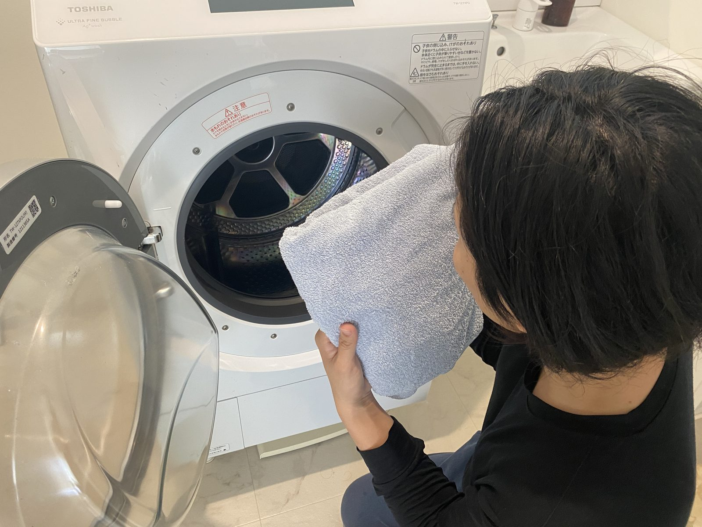

分解洗浄の技術は、現場で一つずつ覚えられます。経験がなくても、続けるほど確かなスキルになります。
「こんなに汚れていたんだ」「気持ちよく使える」。作業の成果がそのままお客様の喜びになる仕事です。
千葉・成田を拠点に、近隣エリアで活動。移動の負担を抑えながら、地元で長く働けます。
未経験で入りましたが、先輩が横で教えてくれるので不安はありませんでした。汚れがごっそり取れたときの達成感は、この仕事ならではです。
※ サンプルテキストです。
機械いじりが好きで応募しました。一台ごとに構造が違うので、覚えるほど面白い。お客様に直接お礼を言われるのも嬉しいです。
※ サンプルテキストです。
※ 上記は提案用のサンプルです。実際の雇用形態・給与・勤務条件に合わせて内容を確定します。